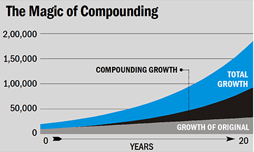

For most of us, life in our 20s is about experimentation, change and growth. Often it's where we make the biggest mistakes, and learn the most important lessons. It’s no different when it comes to our finances. With student loans to pay off, first-time independent living expenses, and all those other costs that make being in your 20s so much fun, it’s too easy to fall into the trap of living paycheck to paycheck and sliding into debt. When we’re young we tend to dismiss messy money situations as temporary – something that can easily be solved by the next raise or bonus that’s on the horizon. In reality, a flippant approach to personal finance in our 20s could cost us a whole lot more down the road. Getting into bad habits when it comes to budgeting, debt and investing can often push us into unsustainable patterns in our 30s and 40s.
The magic ingredient that makes compound interest work best is time. The simple fact is that WHEN you start saving outweighs how much you save.
If you want to easily accumulate wealth and take advantage of the magic of compound interest, it’s important to start early and be consistent. As you can see in the example above, it’s possible for your money to grow to a large sum with a small initial investment. If you consistently save and invest, you’ll have a nice nest egg by the time you retire. To get started, you can: Max out your Roth IRA ($5,500 limit in 2017 and $6,500 for age 50 and older) Contribute to your employer-sponsored 401(k), especially if there is a match (that’s free money!) Contribute to an account like a SEP IRA if you’re self-employed; while you may not get a match from an employer, these contributions are tax-deferred If education is your goal, max out a Coverdell IRA ($2,000 limit) or contribute to a 529 plan (limits vary by state but are much higher). The key is to start now and contribute what you can! It may seem like it’s not worth it, but even small contributions of $25-$100 per month add up over time. Time is your best friend and the one thing that makes compound interest so effective. Saving now and starting early will pay dividends in your future and help you accumulate extra money. That’s the power of compound interest and why it pays to start saving now.
| # | Accounts | Max Contribution (per year) |
|---|---|---|
| 1 | Roth IRA | $5,500 |
| 2 | 401K | $18,500 |
| 3 | Non-tax advantaged account | Unlimted |